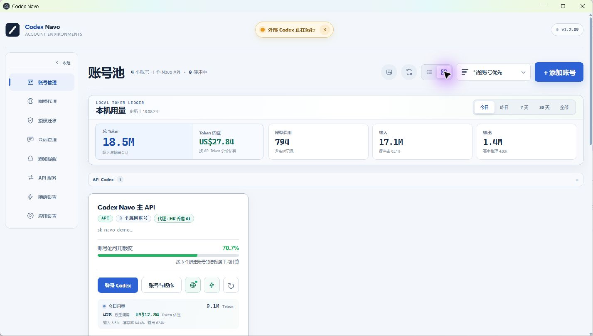

01
账号真正隔离
每个普通账号拥有独立 Chrome 用户目录、Cookie、网页登录状态和 Codex OAuth。
账号隔离与切换、额度和 Token 监控、API 账号池故障切换、账号级代理与会话管理，集中在一个本地优先的 Windows 应用中。
A local-first Codex multi-account workspace with isolation, quota tracking, API pooling and failover, per-account proxies, and session management.

Switch authorization without replacing local project directories. Keep the tools that matter visible and route each account through the network line it needs.
每个普通账号拥有独立 Chrome 用户目录、Cookie、网页登录状态和 Codex OAuth。
集中查看额度、重置时间、输入、缓存、输出、缓存率、模型调用和估值。
通过 OpenAI 兼容 API 使用授权账号，遇到额度耗尽、限流或可重试错误时自动尝试下一账号。
登录、OAuth、额度刷新、Codex 启动和 API 请求均可使用指定线路。
按项目归类进行中、失败、全部与已归档会话，支持折叠、归档和清理。
通知、提示音和可置顶悬浮窗共同展示账号、额度、进度与本次 Token。
把选中的普通账号和临时凭证组成一个本机账号池。每个 Navo API Key 可独立配置账号顺序、模型权限和网络代理。
Base URL: http://127.0.0.1:18300/v1
GET /v1/models
POST /v1/responses
POST /v1/chat/completions
Account pool
→ quota / rate-limit check
→ retryable-error cooldown
→ automatic failoverDownload the latest release, join the community, or help improve Codex Navo.